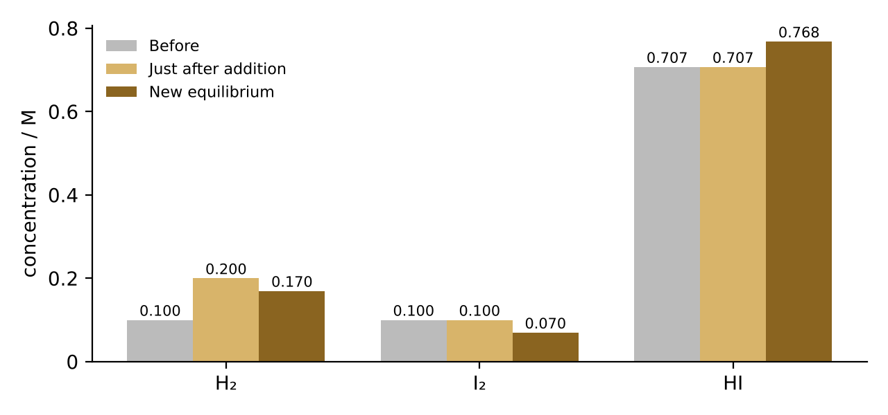
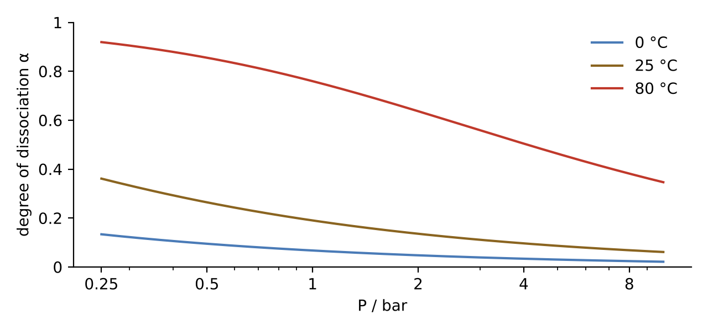
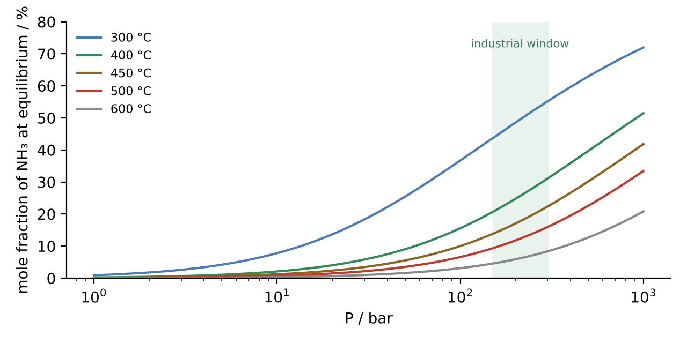
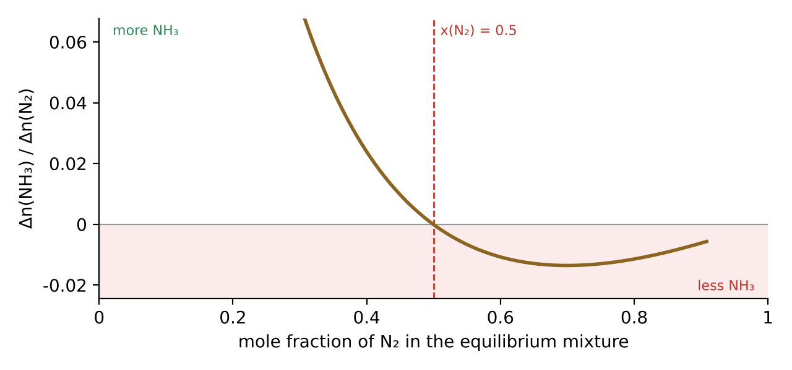

The principle
The French chemist Henri Louis Le Chatelier (1850–1936) stated the principle in 1884, and the German physicist Ferdinand Braun gave it a more general form in 1887. It is therefore also called the Le Chatelier–Braun principle. In its school form it reads:
The three classic changes are a change of concentration, of pressure (by changing the volume) and of temperature. A catalyst does not shift the equilibrium – it only makes it establish itself faster, because it lowers the activation energy equally in both directions.
The important word is partly. The equilibrium can never cancel the change completely. If you add a substance, there is always more of it in the end than before – just not as much more as you added.
Why it works: Q and K
The principle is not an independent law of nature but a consequence of thermodynamics. For a reaction $a\,\mathrm{A} + b\,\mathrm{B} \rightleftharpoons c\,\mathrm{C} + d\,\mathrm{D}$ we define the reaction quotient
At equilibrium $Q$ equals the equilibrium constant $K$. The link to the Gibbs energy is
If $Q < K$, then $\Delta_r G < 0$ and the reaction runs to the right. If $Q > K$, it runs to the left. That is the whole mechanism: a change alters either $Q$ (concentration and pressure) or $K$ (temperature), and the system moves until the two are equal again.
What changes Q?
Adding or removing a substance, and changing the volume or pressure. $K$ is unchanged, so the equilibrium moves until $Q = K$ again.
What changes K?
Only temperature. The van 't Hoff equation $\dfrac{d\ln K}{dT} = \dfrac{\Delta_r H^\circ}{RT^2}$ shows that $K$ increases with $T$ for endothermic reactions and decreases for exothermic ones.
The best advice for students is therefore: when in doubt, calculate Q and compare it with K. That always gives the right answer – also in the cases where the principle stated in words is ambiguous.
Example 1 · Concentration: H₂ + I₂ ⇌ 2HI
At about 450 °C, $K = 50$ for the formation of hydrogen iodide. We start at equilibrium with $[\mathrm{H_2}] = [\mathrm{I_2}] = 0.100$ M. Then
Now 0.100 M H₂ is added, so $[\mathrm{H_2}] = 0.200$ M. Just after the addition
The equilibrium shifts to the right. Calling the amount of H₂ that reacts $x$, we need
The physically possible root is $x = 0.0304$ M. The new equilibrium is
| [H₂] / M | [I₂] / M | [HI] / M | Q | |
|---|---|---|---|---|
| Before | 0.100 | 0.100 | 0.707 | 50 |
| Just after addition | 0.200 | 0.100 | 0.707 | 25 |
| New equilibrium | 0.170 | 0.070 | 0.768 | 50 |
Only about 30 % of the added H₂ is used up. The equilibrium counteracts the change, but only partly: there is still 70 % more H₂ than before.

Example 2 · Pressure: N₂O₄ ⇌ 2NO₂
Dinitrogen tetroxide is colourless; nitrogen dioxide is red-brown. At 25 °C, $K_p = 0.15$ (with the standard pressure $p^\circ = 1$ bar). Starting from pure N₂O₄ and letting a fraction $\alpha$ dissociate, the mole fractions are $x_{\mathrm{NO_2}} = \frac{2\alpha}{1+\alpha}$ and $x_{\mathrm{N_2O_4}} = \frac{1-\alpha}{1+\alpha}$. This gives
| P / bar | α | x(NO₂) |
|---|---|---|
| 1 | 0.190 | 0.32 |
| 10 | 0.061 | 0.12 |
Increasing the pressure tenfold lowers the degree of dissociation from 19 % to 6 %. The equilibrium shifts towards the side with fewer gas molecules. But notice what you actually see when you push in the plunger of a syringe: the gas first becomes darker, because the same NO₂ molecules are now squeezed into a smaller space. Then it slowly becomes somewhat lighter again as the equilibrium shifts towards N₂O₄. It never becomes as light as before, though – the NO₂ concentration still ends up higher. Again: partial counteraction.

Example 3 · Temperature and van 't Hoff
The dissociation of N₂O₄ is endothermic with $\Delta_r H^\circ \approx +57$ kJ/mol. Assuming $\Delta_r H^\circ$ is constant, integrating the van 't Hoff equation gives
From 298 K to 350 K:
At 1 bar this gives $\alpha^2 = 4.6/(4.6+4)$, so $\alpha \approx 0.73$. The dissociation rises from 19 % to 73 %, and the brown colour deepens visibly. This is the classic demonstration with two sealed tubes of NO₂, one in hot water and one in ice water. Use the "Hot water bath" and "Ice water" buttons in the simulation above.
Temperature is the only one of the three changes that alters $K$ itself. When you heat the system, it "counteracts" the change by letting the heat-absorbing reaction run.
Application: the Haber–Bosch compromise
The ammonia synthesis $\mathrm{N_2} + 3\mathrm{H_2} \rightleftharpoons 2\mathrm{NH_3}$ is exothermic ($\Delta_r H^\circ \approx -92$ kJ/mol) and reduces the number of gas molecules from four to two. Le Chatelier's principle therefore says: low temperature and high pressure give the highest yield. But at low temperature the reaction is far too slow, even with an iron catalyst. Industry chooses a compromise around 400–500 °C and 150–300 bar, and continuously removes ammonia by condensing it out as a liquid, so that the equilibrium is constantly pulled to the right.
The curves are calculated for an N₂/H₂ mixture in the ratio 1 : 3, ideal gas, $K_p(723\ \mathrm{K}) \approx 1.45\cdot10^{-5}$ bar⁻² and constant $\Delta_r H^\circ$. At very high pressures real gases deviate from the ideal gas law, and the measured yields are somewhat higher than the curves.

Example 4 · The exception: more nitrogen, less ammonia
Here is a question almost everyone gets wrong: An ammonia equilibrium is held at constant pressure and temperature. What happens when more N₂ is added? The principle in words says: the equilibrium shifts to the right to use up some of the added N₂. But that is not always true.
At constant total pressure $P$, the reaction quotient can be written in terms of amounts:
Adding N₂ increases both $n_{\mathrm{N_2}}$ in the denominator and $n_{\mathrm{tot}}$ in the numerator. Differentiating gives
This is positive precisely when $x_{\mathrm{N_2}} > \tfrac12$. In a nitrogen-rich mixture, added N₂ therefore increases $Q$, so $Q > K$, and the equilibrium shifts to the left: ammonia decomposes and even more N₂ is formed.
A simple numerical example
Take $n_{\mathrm{N_2}} = 6$, $n_{\mathrm{H_2}} = 1$ and $n_{\mathrm{NH_3}} = 1$ mol, so $n_{\mathrm{tot}} = 8$ and $x_{\mathrm{N_2}} = 0.75$. Apart from the common factor $(p^\circ/P)^2$, $Q \propto 1\cdot 64/(6\cdot 1) = 10.7$. Adding 1 mol N₂ gives $n_{\mathrm{N_2}} = 7$ and $n_{\mathrm{tot}} = 9$, and $Q \propto 81/7 = 11.6$. The reaction quotient has increased.
With the real equilibrium constant
At 450 °C and 300 bar, a mixture made from 6 mol N₂ and 1 mol H₂ settles at 5.889 mol N₂, 0.666 mol H₂ and 0.222 mol NH₃ ($x_{\mathrm{N_2}} = 0.87$). Adding 0.5 mol N₂ at fixed pressure and temperature leaves 0.219 mol NH₃ – less than before – and 6.391 mol N₂, slightly more than the 6.389 mol present just after the addition. With a stoichiometric mixture (1 : 3), by contrast, things go as the principle says.

The point is not that Le Chatelier was wrong, but that "the change" is ambiguous. If N₂ is added at constant volume, its concentration rises and the equilibrium always moves to the right. At constant pressure the other substances are diluted at the same time, and that effect can win. Paul Ehrenfest pointed out as early as 1911 that the principle in its usual form does not say precisely what is held constant. Thermodynamics has no such ambiguity: $Q$ compared with $K$ settles the matter.
Inert gas is a related case. Adding argon at constant volume raises the total pressure, but the partial pressures are unchanged and the equilibrium does not move at all. Adding argon at constant pressure amounts to a dilution, and the equilibrium shifts towards the side with more gas molecules.
In everyday life
Fizzy drinks
$\mathrm{CO_2(g)} \rightleftharpoons \mathrm{CO_2(aq)}$. When the bottle is opened, the pressure above the liquid drops and the equilibrium shifts towards the gas phase – it fizzes. A warm drink fizzes more, because dissolving CO₂ is exothermic.
Blood and mountains
$\mathrm{Hb} + 4\,\mathrm{O_2} \rightleftharpoons \mathrm{Hb(O_2)_4}$. In thin mountain air the partial pressure of O₂ is low, so less haemoglobin is oxygenated. Over weeks, the body responds by making more red blood cells.
Ocean acidification
$\mathrm{CO_2} + \mathrm{H_2O} \rightleftharpoons \mathrm{H^+} + \mathrm{HCO_3^-}$. More CO₂ in the atmosphere pushes the equilibrium to the right, the pH falls, and H⁺ reacts with carbonate, which shellfish and corals use for their shells.
Ice under pressure
Ice takes up more room than water. Increasing the pressure shifts the equilibrium ice ⇌ water towards the denser phase, so the melting point falls slightly – about 0.0074 °C per bar.
History
Henri Le Chatelier was an engineer and chemist at the École des Mines in Paris and worked on cement, metallurgy and high-temperature measurement. Among other things he invented a thermocouple of platinum and platinum–rhodium. His principle of 1884 built on J.H. van 't Hoff's work on the effect of temperature on equilibrium, and Ferdinand Braun – later known for the cathode-ray tube and the Nobel Prize for wireless telegraphy – generalised it in 1887.
Ironically, around 1901 Le Chatelier himself tried to synthesise ammonia at high pressure, exactly as his principle prescribed. The attempt ended in an explosion because air had got into the apparatus, and he gave up. Fritz Haber succeeded in 1909, and Carl Bosch scaled the process up at BASF in 1913. Le Chatelier is said to have later regretted letting the ammonia synthesis slip through his fingers.
Exercises
1. Add I₂ instead of H₂
Start again from $[\mathrm{H_2}] = [\mathrm{I_2}] = 0.100$ M and $[\mathrm{HI}] = 0.707$ M at $K = 50$, and add 0.100 M I₂. Find the new equilibrium.
Answer: By symmetry the result is the same as in Example 1 with H₂ and I₂ swapped: $[\mathrm{H_2}] = 0.070$ M, $[\mathrm{I_2}] = 0.170$ M and $[\mathrm{HI}] = 0.768$ M.
2. Halve the volume of the HI equilibrium
What happens to the equilibrium H₂ + I₂ ⇌ 2HI when the volume is halved?
Answer: All concentrations double. Since there are two molecules on each side, the factor $2^2/(2\cdot2) = 1$ cancels and $Q = K$ still. The equilibrium does not move, even though the pressure doubles.
3. N₂O₄ at 0 °C
Use $K_p(298\ \mathrm{K}) = 0.15$ and $\Delta_r H^\circ = 57.2$ kJ/mol to find $K_p$ and $\alpha$ at 273 K and 1 bar.
Answer: $\ln(K_2/K_1) = -\frac{57\,200}{8.314}\left(\frac{1}{273}-\frac{1}{298}\right) = -2.11$, so $K_2 \approx 0.018$. This gives $\alpha = \sqrt{0.018/4.018} \approx 0.067$. The gas is almost colourless.
4. When does the sign change?
Show that adding H₂ at constant pressure and temperature always shifts the ammonia equilibrium to the right.
Answer: $\partial \ln Q/\partial n_{\mathrm{H_2}} = 2/n_{\mathrm{tot}} - 3/n_{\mathrm{H_2}}$. For this to be positive would require $x_{\mathrm{H_2}} > \tfrac32$, which is impossible. Q always falls and the equilibrium moves to the right.
5. A general rule
Find a general condition for when adding a substance $i$ at constant $P$ and $T$ shifts the equilibrium towards the side where $i$ appears – that is, "the wrong way".
Answer: With stoichiometric coefficients $\nu_j$ (positive for products, negative for reactants) and $\Delta\nu = \sum_j \nu_j$, $\ln Q = \sum_j \nu_j \ln n_j - \Delta\nu\ln n_{\mathrm{tot}} + \text{const.}$ Hence $\partial\ln Q/\partial n_i = \nu_i/n_i - \Delta\nu/n_{\mathrm{tot}}$. For a reactant ($\nu_i < 0$) in a reaction with $\Delta\nu < 0$, this becomes positive when $x_i > \nu_i/\Delta\nu$. For N₂ in the ammonia synthesis, $\nu_i/\Delta\nu = (-1)/(-2) = \tfrac12$.
See also the Gibbs paradox page.